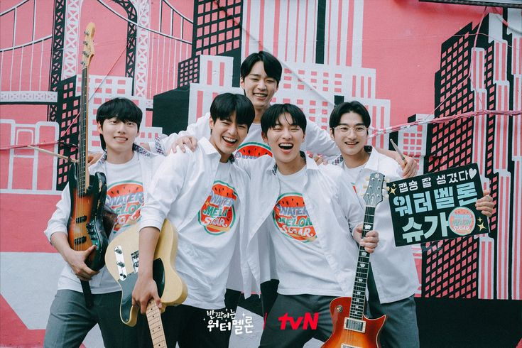
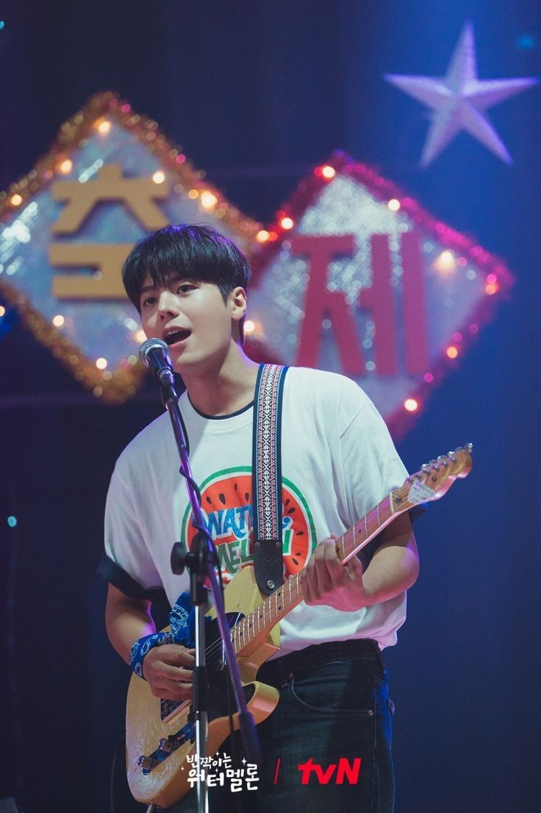
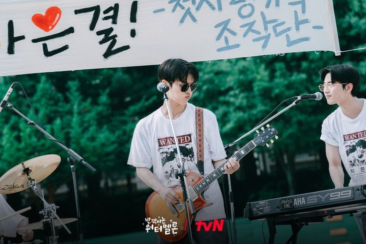
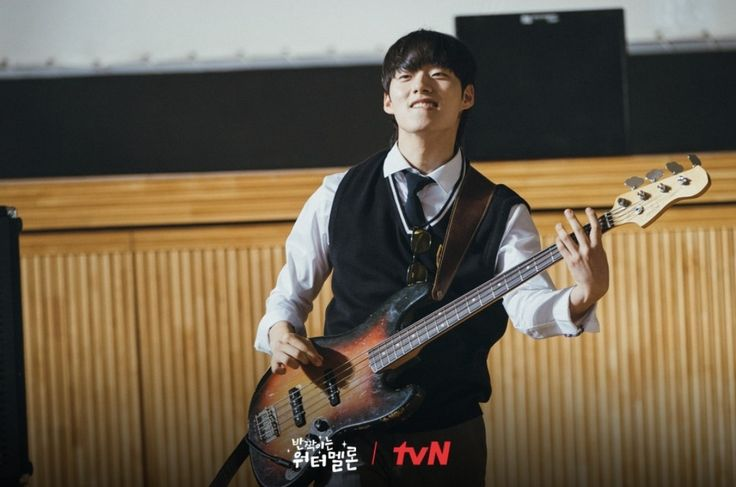
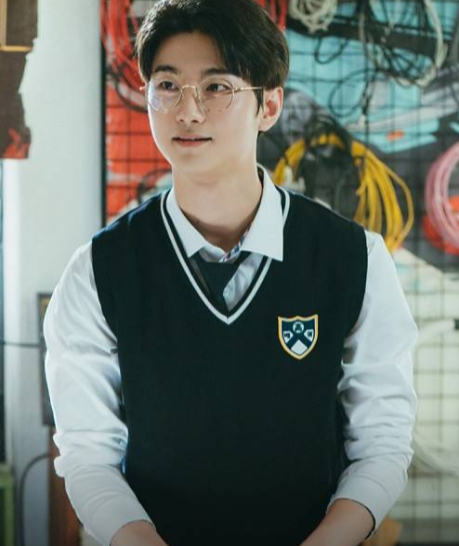
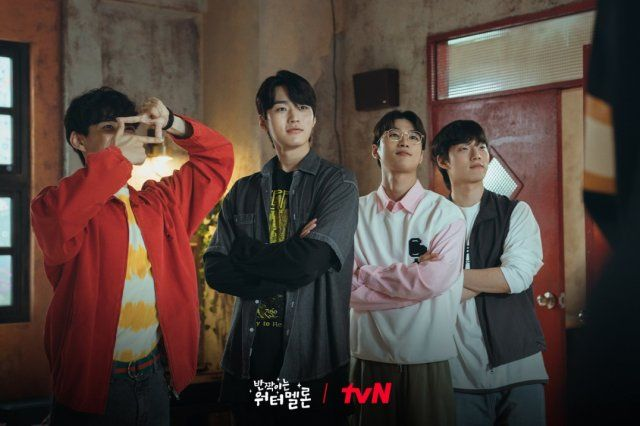
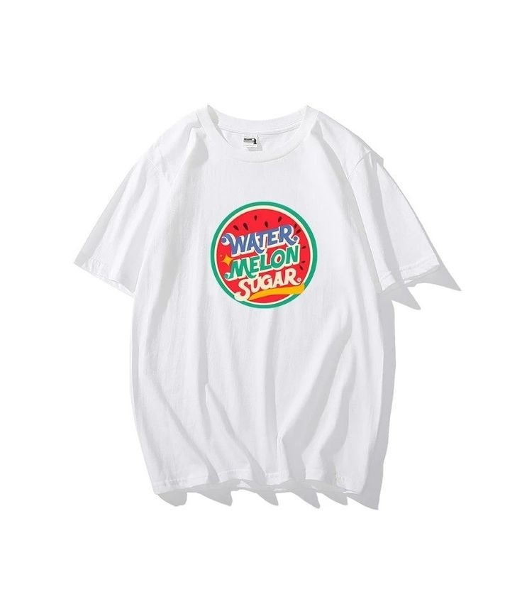
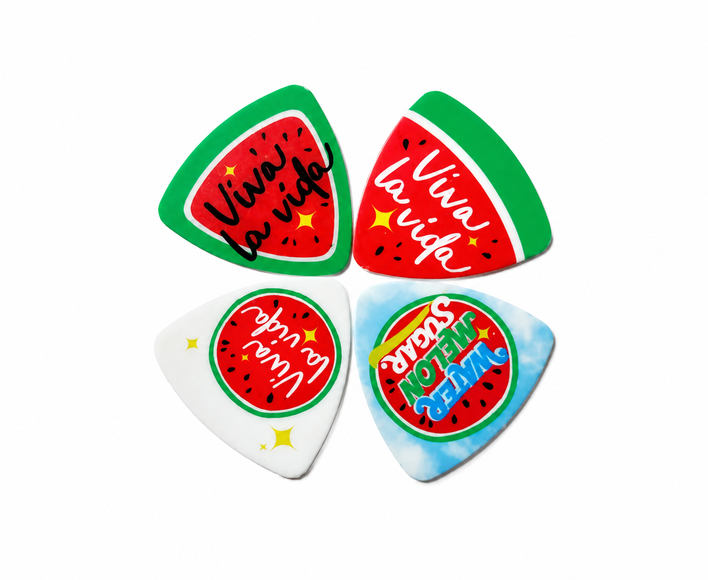
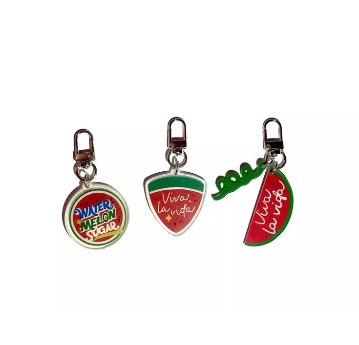

WATERMELON SUGAR
THE TIMELINE TOUR
VIVA LA VIDA
KSPO Dome • Seoul
November 15, 2026
NOW PLAYING
THE TIMELINE
✕

VIVA LA VIDA
MEMORIES THROUGH TIME

MEET THE BAND

Ha Eun Gyeol
Lead Guitar & Vocals

Ha Yi Chan
Lead Guitar & Vocals

Kang Hyun Yool
Bass & Guitar

No Se Bum
Drums

Lee Shi Kook
Piano
COUNTDOWN TO THE SHOW
000 DAYS
OFFICIAL MERCH

THE REUNION SHIRT
Camiseta oficial de la gira 2026 que celebra el regreso de Watermelon Sugar.

SOUNDS OF TIME PICKS
Set de púas inspirado en las canciones y recuerdos que conectaron generaciones.

THE TIMELINE KEYCHAIN
Un recuerdo especial para llevar contigo una parte de la historia de la banda.
VIVA LA VIDA
Some songs never end.
Some memories never fade.
Watermelon Sugar Returns.